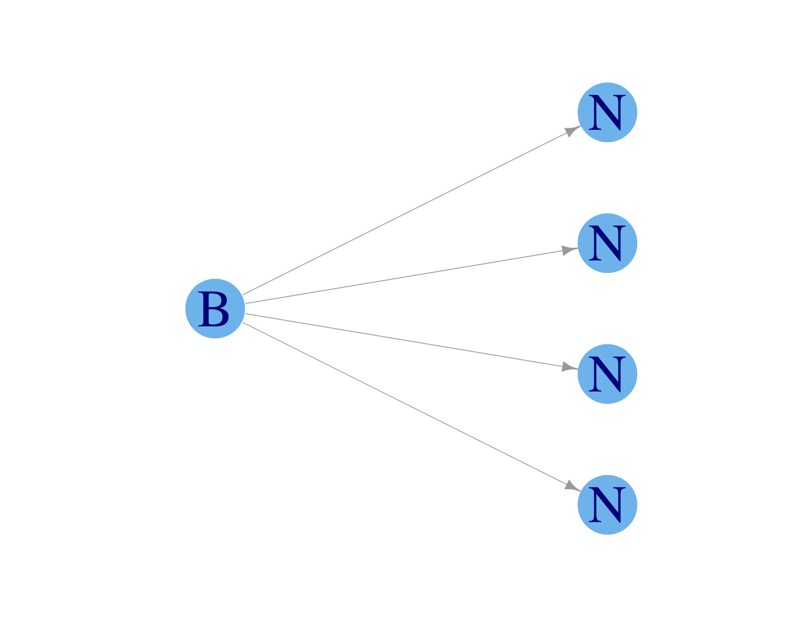

Diffusion of adaptations via social learning
Part I: the Legacy-Adaptive and Legacy-Adaptive-Legacy contagion models
2025-01-13
Ostrom’s design principles for sustainable socio-ecological systems
- Elinor Ostrom led development of social-ecological systems theory, which identified design principles to sustainably manage common-pool resources like clean water or healthy forests; all the common-pool resources together are called the commons.
- First woman to win a Nobel prize in economics (2009)

Select design principles (8 total; see Cox, Arnold, and Tomás (2010) reading for an overview):
- Rules should fit local circumstances
- Participation of all stakeholders is vital
- Management of the commons must be organized across social and institutional scales
- All levels of social hierarchy must be recognized and free to organize
- Conflict resolution should be easily accessible
Legacy-adaptive (LA) model
- Adapted from the susceptible-infected (SI) model of disease transmission, i.e., a model of contagion where something spreads through contact with others.
- Assume that when an observer doing \(L\) (legacy behavior) interacts with someone doing \(A\) (adaptive behavior), there is a probability \(\alpha\) that the observer starts doing \(A\).
- \(\alpha\) is the adoption probability

Why this “legacy-adaptive” dichotomy?

- “The legacy media want to destroy your right to freedom of speech” says Elon Musk
- Musk effectively repurposed the phrase “legacy software”, which indicates old, outdated software that will one day be abandoned
- It may be helpful to harness this phrase to the same effect as Musk does, but as a label for unsustainable behaviors
- It can be important to contest certain concepts like “legacy” to restrain others from defining how useful terms can be used
LA model in a “well-mixed” population

- “Well-mixed” means that all individuals can learn from every other individual
- We also assume that \(N\to\infty\) so that it makes more sense (maybe?) to have model output in terms of “fractional people”
- If we were to draw the social network, every agent would have a line to every other agent indicating ubiquitous bi-directional influence
Legacy-adaptive-legacy (LAL) model
- Adapted from the susceptible-infected-susceptible epidemiology model
- Identical to LA model, except that there is a drop probability \(\delta\) that someone performing \(A\) regresses to again perform \(L\)

Legacy-adaptive-legacy (LAL) model
\[ A_{t+1} = A_t + \alpha A_t (1 - \frac{A_t}{N}) \text{ ...? } \]
Legacy-adaptive-legacy (LAL) model
Need to subtract the fraction of those doing \(A\) who regress to do \(L\)
\[ A_{t+1} = A_t + \alpha A_t (1 - \frac{A_t}{N}) - \delta A_t \]